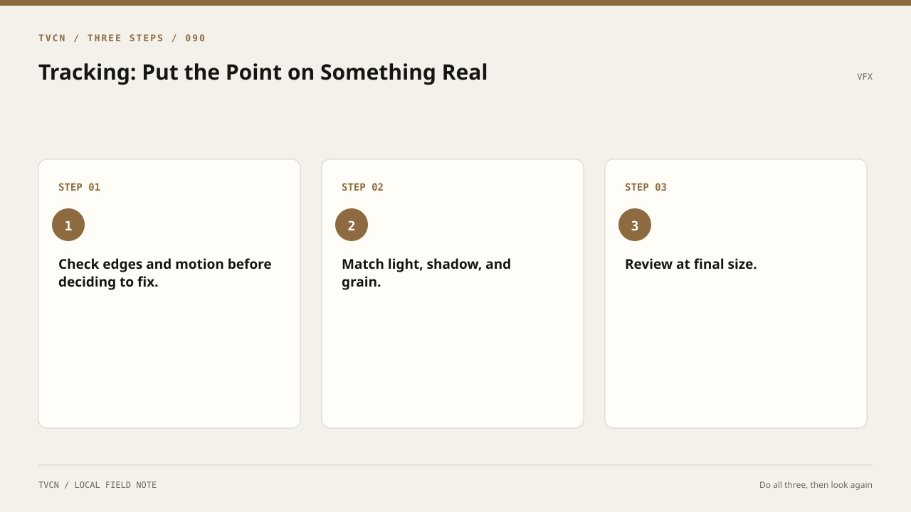

On set
Place three tracking points: a textured corner, a high-contrast mark, and a backup. If one gets blocked, switch to manual keyframes.
Do this
Tracking points belong on real, textured, unobstructed surfaces; a flat wall will drift.
- Place three points: a textured corner, a high-contrast mark, and a backup.
- Switch to manual keys when a point is occluded.
- Play the whole shot and check for drift or sliding.
Avoid
Do not put points on a flat wall or mirror; the tracker has nothing to grab.
Three-step flow

How to choose points
Choose textured, high-contrast, non-repeating features: a wall corner, label, screw or floor pattern. Do not put points on a flat wall, a mirror, a fast-moving hand or an ear that hair will cover.
Use at least three points for planar tracking and six at different depths for 3D. More is not better; a point that survives occlusion is.
Solve order
- Set origin and scale before solving. Do not change lens distortion while solving.
- Solve translation/rotation/scale first, then perspective. If the error is large, go back to manual keys.
- Check reprojection: stick a test grid to the plate; the edge must not slide.
For motion-blurred shots, compensate or key manually first. Do not make the tracker guess.
Tracking failures
- Flat wall: no texture, so the tracker drifts. Add temporary marks or key manually.
- Reflective or transparent surface: the point moves and the solve scales. Move to nearby real texture.
- Rolling shutter: fast pans warp the plate. Undistort first or change the lens.
- Occlusion: points disappear and do not recover. Place backup points and switch to manual keys.
Solve acceptance log
- Reprojection error at delivery size is 1–2px or less; no slide at 200%.
- Play the full shot: no scale drift, foot slide or sudden point jump.
- Occlusion sections have manual keys and no hard transition.
- Log tracking software, version, lens, focal length, solve error and manual key count.
Solve log
Log lens, focal length, tracking software version, solve error, manual key count and occlusion sections. When the error grows, check these fields before re-solving the whole shot.
Check before re-solving
Check lens-distortion calibration and focal length first, then whether points were occluded. Do not re-solve the whole shot immediately. Save the previous solve so you can roll back.
Image note. Covers, diagrams and step images on this page are editorial illustrations or structure diagrams, not photographs of a test performed here; they are not evidence of measured gear performance. Where an image is AI-assisted, the caption says so. Read the test conditions in the text before treating an image as proof.